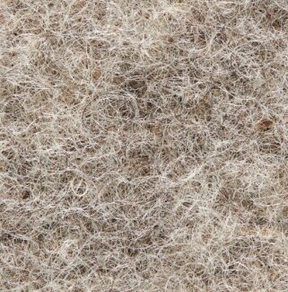
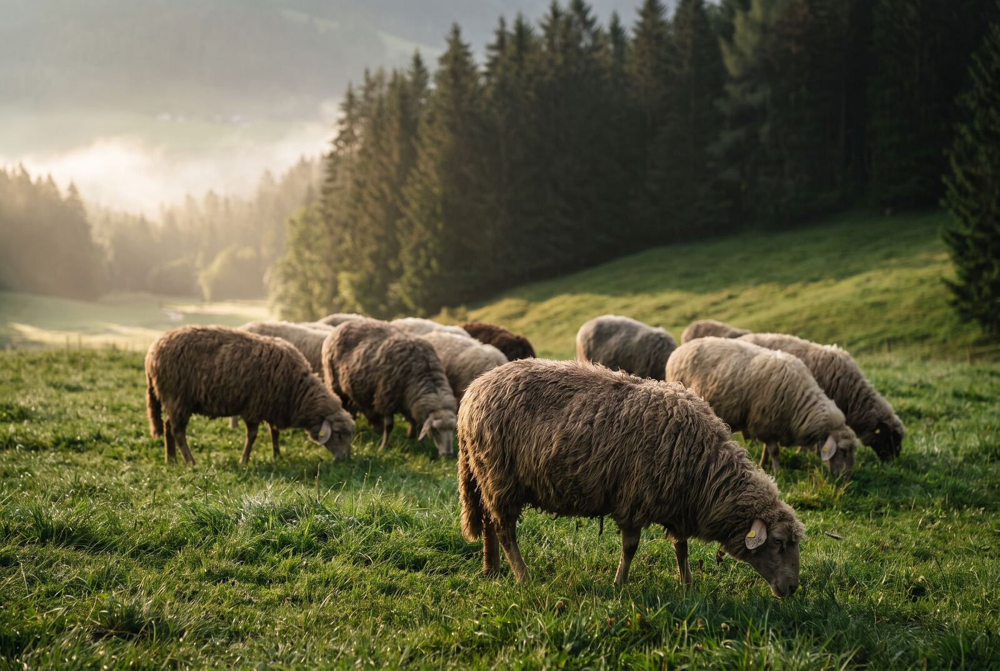
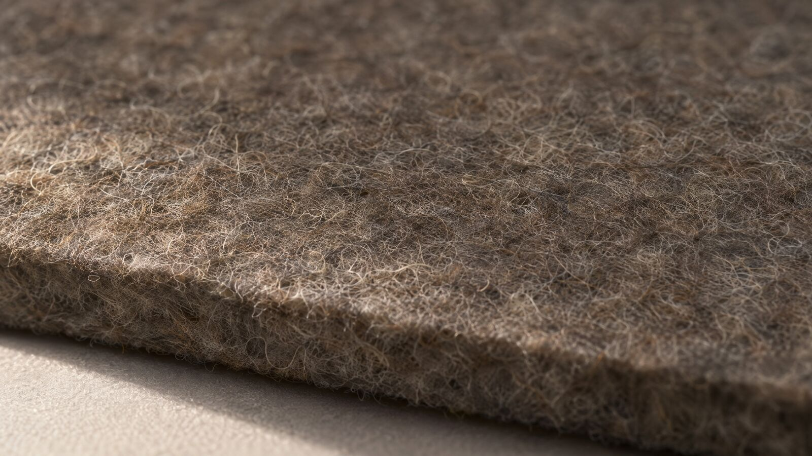
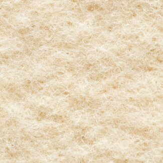
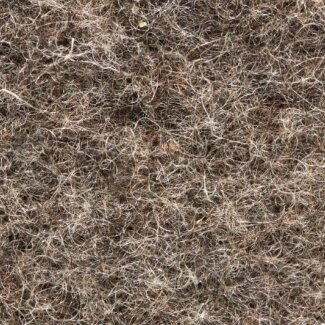
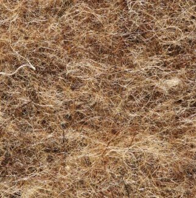
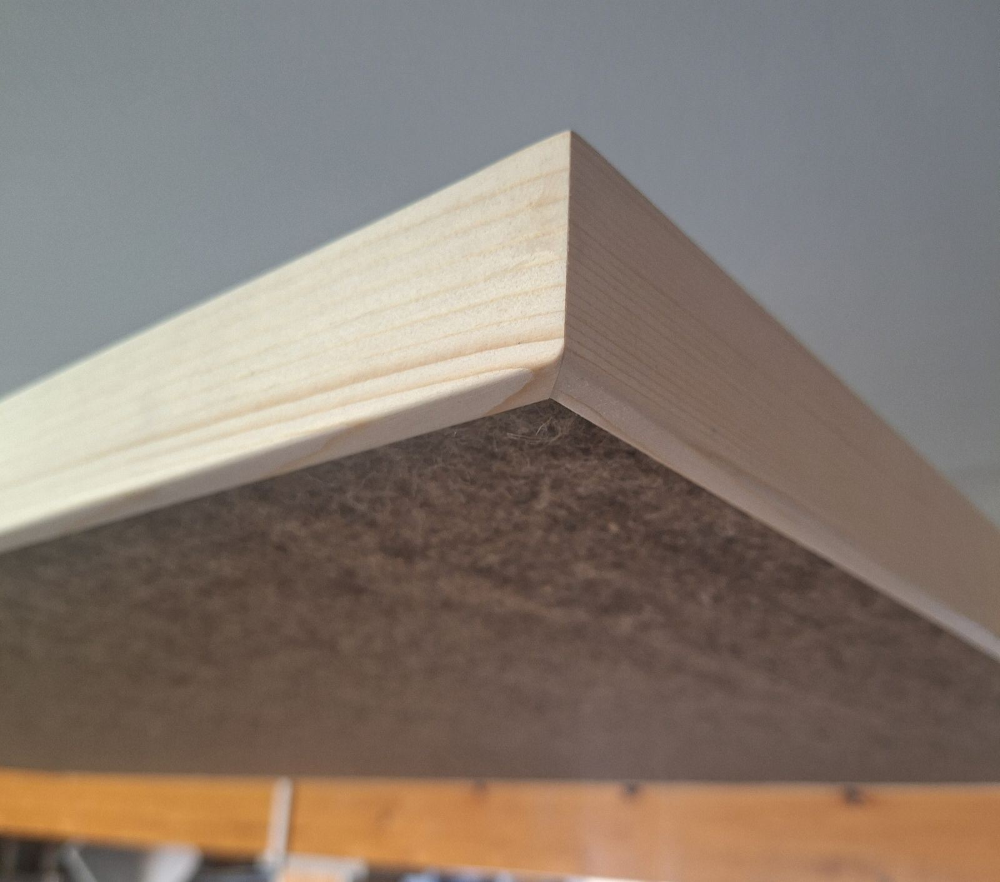
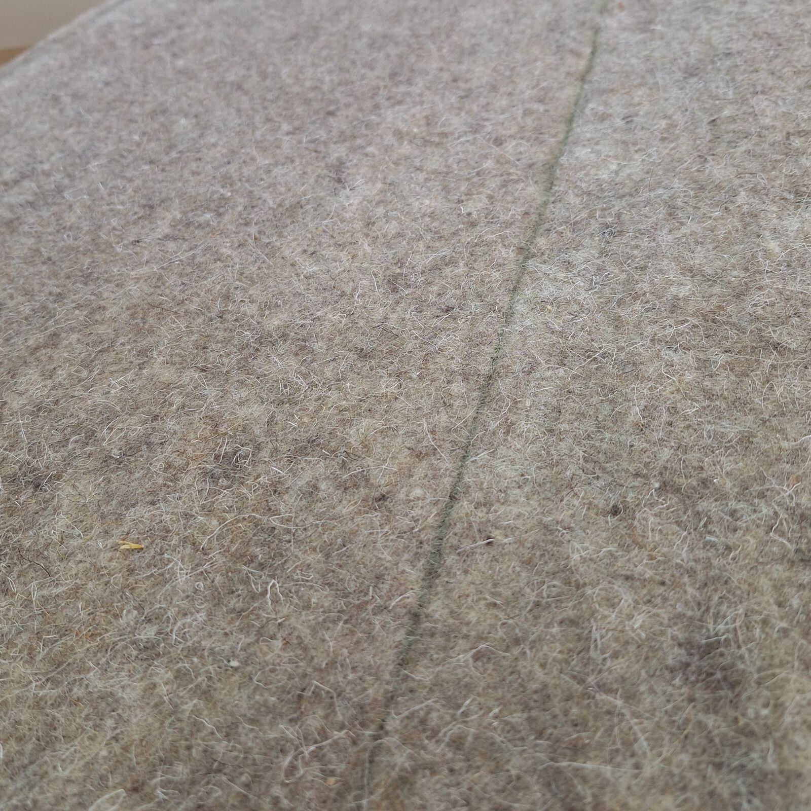
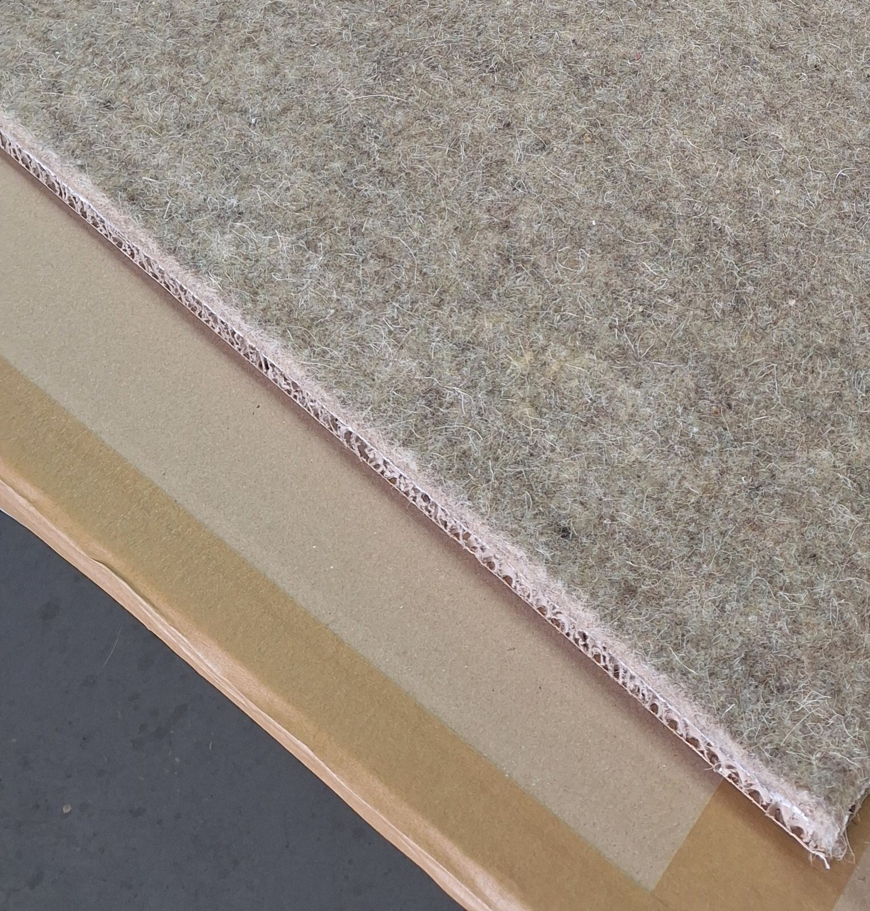
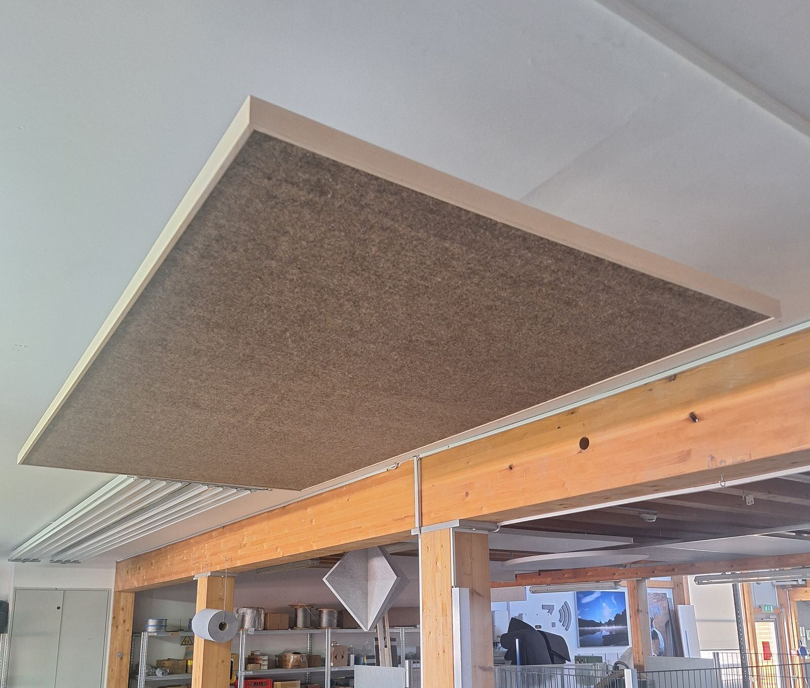

Stone
Hellgrau meliert
Neutral und zurückhaltend. Passt zu Sichtbeton, Weiß und Grautönen und fügt sich in fast jedes Büro ein. Auf der melierten Oberfläche fallen Staub und kleine Flecken kaum auf.
Material & Herkunft
Natur Schallabsorber bestehen aus zertifizierter Silentum® Schafwolle, einer Trägerplatte aus FSC-Karton oder Gipskarton und einem Rahmen aus einheimischer Fichte. Alle Rohstoffe stammen aus Österreich und Deutschland.

Rohstoffe aus Österreich und Deutschland, kurze Transportwege.
Die Wolle filtert Schad- und Reizstoffe wie Formaldehyd und neutralisiert sie dauerhaft.
Die Wolle zieht Staub nicht an und ist von Natur aus allergikergeeignet.
Natura-Plus-Zertifikat und EPD für die Wolle, EPD für die Gipskartonplatte.

Silentum® Schafwolle
Die Silentum® Schafwolle aus Österreich ist ein 100 % Naturprodukt. Sie filtert Schadstoffe wie Formaldehyd aus der Raumluft und neutralisiert sie dauerhaft.
Schafwolle ist von Natur aus allergikergeeignet. Das macht sie angenehm für Gastronomie, Hotels, Schulen und Wohnräume. Durch das zertifizierte IONIC-Protect-Verfahren nisten sich keine Motten und andere Schädlinge ein.
Naturfarben
Die Wolle ist als Akustikfilz in den Naturfarben Stone, Creme, Wood und Origin erhältlich. Sonderfarben und Sonderformate sind auf Anfrage möglich.

Hellgrau meliert
Neutral und zurückhaltend. Passt zu Sichtbeton, Weiß und Grautönen und fügt sich in fast jedes Büro ein. Auf der melierten Oberfläche fallen Staub und kleine Flecken kaum auf.

Die hellste Farbe
Wirft viel Licht zurück. Räume wirken dadurch heller, freundlicher und größer. Gut für niedrige Decken und Räume mit wenig Tageslicht.

Dunkel meliert
Setzt einen klaren Akzent und wirkt warm und ruhig. Dunkle Flächen schlucken viel Licht. Bei großen Flächen an der Decke sollte die Beleuchtung das ausgleichen.

Warmes Naturbraun
Wirkt wohnlich und natürlich. Passt zu Holzböden, Eiche und Erdtönen und eignet sich gut für Hotelzimmer, Wohnräume und Lounges.
Farbe richtig wählen. Alle vier Farben haben dieselben Akustikwerte, die Wahl ist also eine Frage der Wirkung. Helle Wolle wirft Licht zurück, dunkle schluckt es. Sehen Sie sich das Muster deshalb am besten im Raum selbst an, bei Tageslicht und bei der späteren Beleuchtung. Verbindlich sind die Farbmuster, die wir Ihnen auf Anfrage zusenden.
Farbmuster anfordern
Trägerplatte und Holz
Die Platte aus FSC-zertifiziertem Wabenkarton wird in Deutschland produziert. Sie enthält keine gesundheitsgefährdenden Stoffe oder anzeigepflichtigen Substanzen gemäß den Kriterien aus 3.2 des Anhangs II der REACH-Verordnung.
Die Gipskartonplatten kommen aus Deutschland. Sie enthalten keine reaktiven chemischen Stoffe, haben niedrige CO₂-Emissionen, tragen das Finnische Emissionslabel M1, sind ISO 14001 zertifiziert und haben eine EPD.
Die Rahmen bestehen aus einheimischer, naturbelassener Fichte ohne Lackierung. Bei Holz ist eine natürliche Nachfärbung durch Lichteinfall üblich.
CO₂-Rechner
Geben Sie ein, wie viel Fläche Sie planen. Der Rechner zeigt das Treibhauspotenzial (GWP total) laut Prospekt. Ein negativer Wert heißt: Im Produkt ist mehr CO₂ gebunden, als bei der Herstellung entsteht, vor allem durch den Kohlenstoff in Wolle, Holz und Karton.
Fläche in m² Produktfläche. Ein Deckensegel 2408 × 1208 mm hat rund 2,9 m².
Werte je m² aus den Prospekten F2026: Deckensegel und Wandabsorber Light ca. −0,31, Resistant ca. −0,43 kg CO₂e/m². Die Natur Akustikdecke kommt dazu, sobald sie erhältlich ist. Die Berechnung ist eine Näherung; welche Lebenszyklusphasen enthalten sind, regeln die zugrunde liegenden Produktdeklarationen. Unterkonstruktion und Montage rechnet der Rechner nicht mit.
Werkstatt
Unbearbeitete Aufnahmen aus Oberndorf.




Muster
Bestellen Sie ein Muster und prüfen Sie Haptik und Farbe selbst.
Muster anfordern
NATUR ist die Produktlinie für natürliche Raumakustik von ZIEGLER SCHALLSCHUTZ. Seit über 30 Jahren planen, fertigen und montieren wir Schallabsorber für Büros, Schulen und Industrie. Mit einer beauftragten Nachhallzeitmessung auch mit Akustik-Garantie.